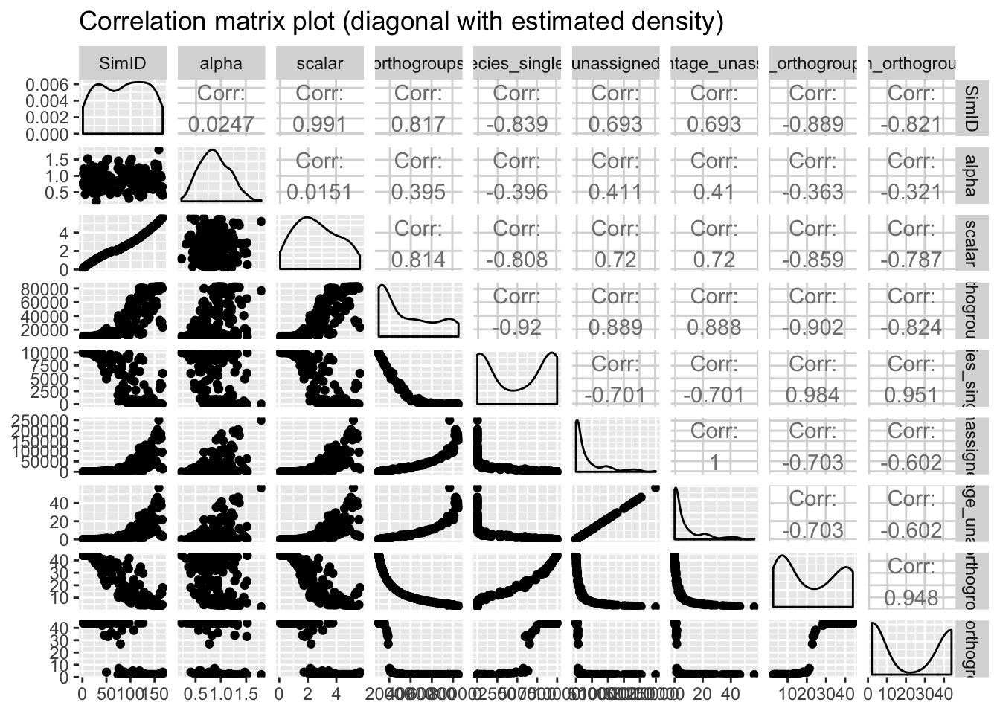
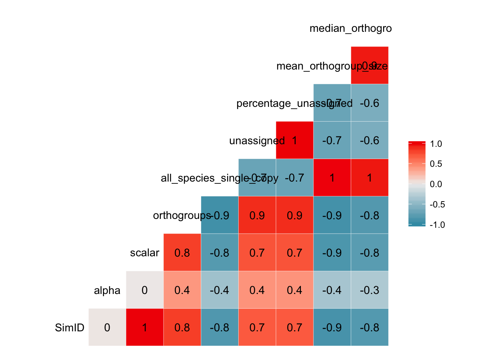
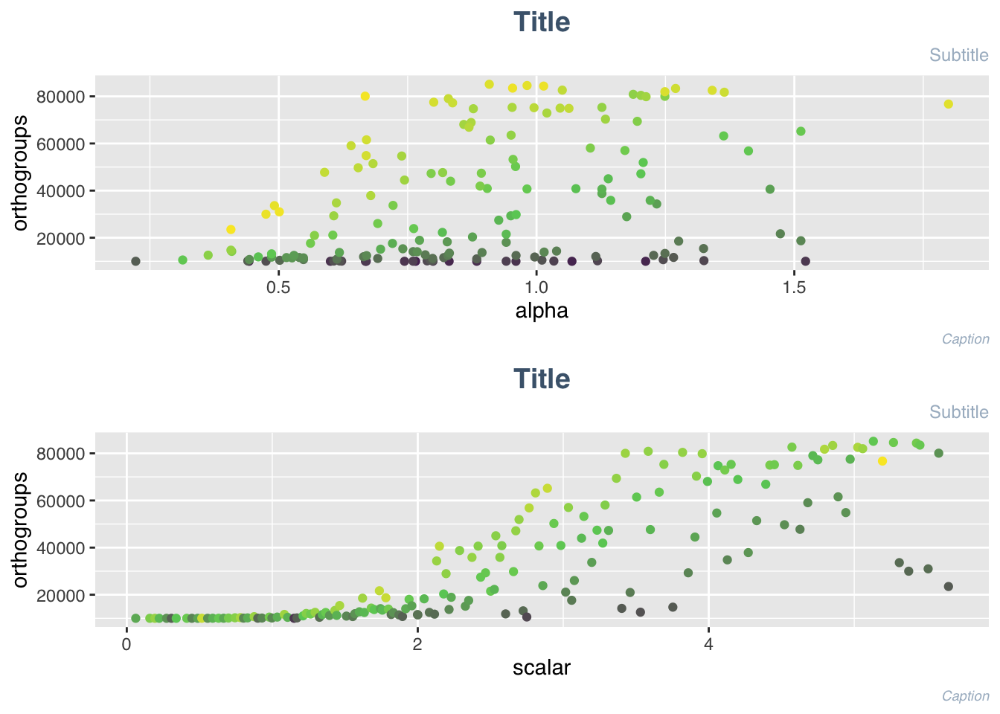

Orthofinder resultsAlf
Last updated: 2019-12-26
Checks: 7 0
Knit directory: alfie/
This reproducible R Markdown analysis was created with workflowr (version 1.6.0). The Checks tab describes the reproducibility checks that were applied when the results were created. The Past versions tab lists the development history.
Great! Since the R Markdown file has been committed to the Git repository, you know the exact version of the code that produced these results.
Great job! The global environment was empty. Objects defined in the global environment can affect the analysis in your R Markdown file in unknown ways. For reproduciblity it’s best to always run the code in an empty environment.
The command set.seed(20191222) was run prior to running the code in the R Markdown file. Setting a seed ensures that any results that rely on randomness, e.g. subsampling or permutations, are reproducible.
Great job! Recording the operating system, R version, and package versions is critical for reproducibility.
Nice! There were no cached chunks for this analysis, so you can be confident that you successfully produced the results during this run.
Great job! Using relative paths to the files within your workflowr project makes it easier to run your code on other machines.
Great! You are using Git for version control. Tracking code development and connecting the code version to the results is critical for reproducibility. The version displayed above was the version of the Git repository at the time these results were generated.
Note that you need to be careful to ensure that all relevant files for the analysis have been committed to Git prior to generating the results (you can use wflow_publish or wflow_git_commit). workflowr only checks the R Markdown file, but you know if there are other scripts or data files that it depends on. Below is the status of the Git repository when the results were generated:
Ignored files:
Ignored: .Rproj.user/
Note that any generated files, e.g. HTML, png, CSS, etc., are not included in this status report because it is ok for generated content to have uncommitted changes.
These are the previous versions of the R Markdown and HTML files. If you’ve configured a remote Git repository (see ?wflow_git_remote), click on the hyperlinks in the table below to view them.
| File | Version | Author | Date | Message |
|---|---|---|---|---|
| Rmd | 49b99dd | cgpu | 2019-12-26 | Adds EDA tab; Adds custom style.css |
| Rmd | 4173f04 | cgpu | 2019-12-22 | Removes redundant eda.{Rmd,html}; Content moved to index.Rmd |
| html | 4173f04 | cgpu | 2019-12-22 | Removes redundant eda.{Rmd,html}; Content moved to index.Rmd |
| html | 937717c | cgpu | 2019-12-22 | Build site. |
| Rmd | 71333a4 | cgpu | 2019-12-22 | Publish analysis files |
library(Rfast)Loading required package: RcppLoading required package: RcppZigguratlibrary(gamlss)Loading required package: splinesLoading required package: gamlss.data
Attaching package: 'gamlss.data'The following object is masked from 'package:datasets':
sleepLoading required package: gamlss.distLoading required package: MASSLoading required package: nlmeLoading required package: parallel ********** GAMLSS Version 5.1-5 ********** For more on GAMLSS look at http://www.gamlss.org/Type gamlssNews() to see new features/changes/bug fixes.library(MASS)
library(magrittr)
library(plotly)Loading required package: ggplot2
Attaching package: 'plotly'The following object is masked from 'package:ggplot2':
last_plotThe following object is masked from 'package:MASS':
selectThe following object is masked from 'package:stats':
filterThe following object is masked from 'package:graphics':
layoutlibrary(cowplot)
********************************************************Note: As of version 1.0.0, cowplot does not change the default ggplot2 theme anymore. To recover the previous behavior, execute:
theme_set(theme_cowplot())********************************************************library(data.table)
Attaching package: 'data.table'The following object is masked from 'package:Rfast':
transposelibrary(GGally)Registered S3 method overwritten by 'GGally':
method from
+.gg ggplot2ortho_results <- data.table::fread("data/stats167.csv")
skimr::skim(ortho_results)| Name | ortho_results |
| Number of rows | 160 |
| Number of columns | 9 |
| _______________________ | |
| Column type frequency: | |
| numeric | 9 |
| ________________________ | |
| Group variables | None |
Variable type: numeric
| skim_variable | n_missing | complete_rate | mean | sd | p0 | p25 | p50 | p75 | p100 | hist |
|---|---|---|---|---|---|---|---|---|---|---|
| SimID | 0 | 1 | 84.79 | 49.25 | 1.0e+00 | 40.75 | 87.50 | 127.25 | 167.00 | ▇▆▇▇▇ |
| alpha | 0 | 1 | 0.88 | 0.29 | 2.2e-01 | 0.67 | 0.86 | 1.08 | 1.80 | ▃▇▇▃▁ |
| scalar | 0 | 1 | 2.64 | 1.48 | 6.0e-02 | 1.46 | 2.51 | 3.83 | 5.65 | ▆▇▇▅▅ |
| orthogroups | 0 | 1 | 34199.28 | 25873.67 | 1.0e+04 | 11576.25 | 21591.50 | 54725.00 | 85123.00 | ▇▂▂▁▂ |
| all_species_single_copy | 0 | 1 | 4960.63 | 4218.51 | 0.0e+00 | 227.25 | 5640.00 | 9322.00 | 9998.00 | ▇▁▁▁▇ |
| unassigned | 0 | 1 | 33019.17 | 50515.52 | 0.0e+00 | 1018.75 | 9209.00 | 41843.25 | 249532.00 | ▇▁▁▁▁ |
| percentage_unassigned | 0 | 1 | 7.50 | 11.48 | 0.0e+00 | 0.20 | 2.10 | 9.53 | 56.70 | ▇▁▁▁▁ |
| mean_orthogroup_size | 0 | 1 | 22.36 | 15.43 | 2.5e+00 | 7.27 | 20.05 | 37.92 | 44.00 | ▇▂▂▃▆ |
| median_orthogroup_size | 0 | 1 | 21.69 | 20.52 | 2.0e+00 | 2.00 | 4.00 | 44.00 | 44.00 | ▇▁▁▁▇ |
DataExplorer::plot_str(ortho_results) ggcor <- GGally::ggpairs(ortho_results, title = "Correlation matrix plot (diagonal with estimated density)")
ggcor
| Version | Author | Date |
|---|---|---|
| 937717c | cgpu | 2019-12-22 |
GGally::ggcorr(ortho_results, method = c("everything", "pearson"), label = TRUE) 
| Version | Author | Date |
|---|---|---|
| 937717c | cgpu | 2019-12-22 |
dplyr::glimpse(ortho_results)Observations: 160
Variables: 9
$ SimID <int> 1, 2, 3, 4, 5, 6, 7, 8, 9, 10, 11, 12, 13, 14…
$ alpha <dbl> 0.7654031, 1.0686580, 1.2116030, 0.8303773, 0…
$ scalar <dbl> 0.0616, 0.1583, 0.1931, 0.2230, 0.2734, 0.306…
$ orthogroups <int> 10001, 10001, 10001, 10001, 10002, 10001, 100…
$ all_species_single_copy <int> 9998, 9991, 9991, 9995, 9990, 9995, 9997, 999…
$ unassigned <int> 0, 1, 3, 2, 3, 3, 3, 44, 2, 41, 6, 49, 15, 10…
$ percentage_unassigned <dbl> 0.0, 0.0, 0.0, 0.0, 0.0, 0.0, 0.0, 0.0, 0.0, …
$ mean_orthogroup_size <dbl> 44.0, 44.0, 44.0, 44.0, 44.0, 44.0, 44.0, 44.…
$ median_orthogroup_size <int> 44, 44, 44, 44, 44, 44, 44, 44, 44, 44, 44, 4…head(ortho_results) SimID alpha scalar orthogroups all_species_single_copy unassigned
1: 1 0.7654031 0.0616 10001 9998 0
2: 2 1.0686580 0.1583 10001 9991 1
3: 3 1.2116030 0.1931 10001 9991 3
4: 4 0.8303773 0.2230 10001 9995 2
5: 5 0.6696246 0.2734 10002 9990 3
6: 6 0.4422281 0.3065 10001 9995 3
percentage_unassigned mean_orthogroup_size median_orthogroup_size
1: 0 44 44
2: 0 44 44
3: 0 44 44
4: 0 44 44
5: 0 44 44
6: 0 44 44ggsubtitle_custom_color = '#A9BACA'
ggtitle_custom_color = '#4A637B'
ggcaption_custom_color = '#A9BACA'
h = 10000
# alpha plot
alpha_plot <-
ggplot2::ggplot(data = ortho_results) + aes(x =alpha,
y = orthogroups,
color = scalar) +
geom_point() +
# geom_hline(aes(yintercept = h, colour = "red")) +
# geom_text(aes(0, h ,label = h, vjust = -1)) +
# // layer 6: Setting annotation for title, subtitle, caption
labs(title = "Title",
subtitle = "Subtitle",
caption = "Caption") +
theme(text = element_text(family = 'Helvetica',
color = '#000000')
,plot.title = element_text(color = ggtitle_custom_color , size = 14, face = "bold" , hjust = 0.5)
,plot.subtitle = element_text(color = ggsubtitle_custom_color, size = 9 , hjust = 1)
,plot.caption = element_text(color = ggsubtitle_custom_color, size = 7, face = "italic")
,legend.position = "none") +
scale_color_gradient2(midpoint=mean(ortho_results$scalar),
low ="red",
mid ="white",
high ="blue",
space ="Lab" )
# +
# scale_x_continuous(breaks = pretty(ortho_results$alpha, n = 10)) +
# scale_y_discrete(breaks = pretty(ortho_results$orthogroups, n = 20))
# scalar plot
scalar_plot <- ggplot2::ggplot(data = ortho_results) + aes(x = scalar,
y = orthogroups,
color = alpha ) +
geom_point() +
# geom_hline(aes(yintercept = h, colour = "red")) +
# geom_text(aes(0, h ,label = h, vjust = -1)) +
# // layer 6: Setting annotation for title, subtitle, caption
labs(title = "Title",
subtitle = "Subtitle",
caption = "Caption") +
theme(text = element_text(family = 'Helvetica',
color = '#000000')
,plot.title = element_text(color = ggtitle_custom_color , size = 14, face = "bold" , hjust = 0.5)
,plot.subtitle = element_text(color = ggsubtitle_custom_color, size = 9 , hjust = 1)
,plot.caption = element_text(color = ggsubtitle_custom_color, size = 7, face = "italic")
,legend.position = "none") +
scale_color_gradient2(midpoint=mean(ortho_results$alpha),
low ="red",
mid ="white",
high ="blue",
space ="Lab" )
# +
# scale_x_continuous(breaks = pretty(ortho_results$scalar, n = 10)) +
# scale_y_continuous(breaks = pretty(ortho_results$orthogroups, n = 20))
plot_grid(alpha_plot, scalar_plot, ncol = 1, nrow = 2)
| Version | Author | Date |
|---|---|---|
| 937717c | cgpu | 2019-12-22 |
cam.zoom = 1
ver.angle = 90
plotly::plot_ly(data = ortho_results,
x=~scalar,
z=~orthogroups,
y=~alpha,
type="scatter3d",
mode="markers",
color = ~orthogroups) %>%
layout( title = "3D Scatter plot of scalar, alpha, orthogroups",
scene = list(xaxis = list(title = 'scalar'),
yaxis = list(title = 'alpha'),
zaxis = list(title = 'orthogroups')))RFastclass(as.matrix(ortho_results[,c("alpha","scalar")]))[1] "matrix"Rfast::cor.fsreg(ortho_results$orthogroups,
as.matrix(ortho_results[,c("alpha","scalar")]),
ystand = TRUE,
xstand = TRUE,
threshold = 0.00005,
tolb = 2,
tolr = 0.02,
stopping = "BICR2") sel pv stat bic adjusted R2
[1,] 2 -67.73863 14.26717 294.48 0.6603902Rfast::qpois.reg(ortho_results$all_species_single_copy, ortho_results$orthogroups, full = FALSE, tol = 1e-09,maxiters = 100)$be
[,1]
[1,] 11.0927439046
[2,] -0.0001930696
$devi
[1] 165599.5
$varb
[,1] [,2]
[1,] 2.635490e-04 -3.618679e-08
[2,] -3.618679e-08 1.772443e-11
$phi
[1] 1037.846quasi <- glm(ortho_results$orthogroups~ortho_results$scalar, family=quasipoisson) #quasipoisson
sum_quasi <- summary(quasi)
df = 3 # three model parameters: a,b, and phi
phi.fit = sum_quasi$dispersion #fitted phi value (aka dispersion) from summary(quasi)
mu.fit = quasi$fitted.values
#dnbinom = negbin density, log=T returns log probabilities
AIC_quasi = 2*df - 2*sum(dnbinom(ortho_results$orthogroups,
mu=mu.fit,
size = mu.fit/(phi.fit - 1),
log=T))
AIC_quasi[1] 3482.584glmNB <- MASS::glm.nb(ortho_results$orthogroups~ortho_results$scalar) #negative binomial
gamlss_NB1 <- gamlss::gamlss(ortho_results$orthogroups~ortho_results$scalar, family = "NBI") GAMLSS-RS iteration 1: Global Deviance = 3410.072
GAMLSS-RS iteration 2: Global Deviance = 3410.072 gamlss_NB2 <- gamlss::gamlss(ortho_results$orthogroups~ortho_results$scalar, family = "NBII")GAMLSS-RS iteration 1: Global Deviance = 3494.26
GAMLSS-RS iteration 2: Global Deviance = 3472.721
GAMLSS-RS iteration 3: Global Deviance = 3471.49
GAMLSS-RS iteration 4: Global Deviance = 3471.465
GAMLSS-RS iteration 5: Global Deviance = 3471.465
sessionInfo()R version 3.6.0 (2019-04-26)
Platform: x86_64-apple-darwin15.6.0 (64-bit)
Running under: macOS Mojave 10.14.5
Matrix products: default
BLAS: /Library/Frameworks/R.framework/Versions/3.6/Resources/lib/libRblas.0.dylib
LAPACK: /Library/Frameworks/R.framework/Versions/3.6/Resources/lib/libRlapack.dylib
locale:
[1] en_GB.UTF-8/en_GB.UTF-8/en_GB.UTF-8/C/en_GB.UTF-8/en_GB.UTF-8
attached base packages:
[1] parallel splines stats graphics grDevices utils datasets
[8] methods base
other attached packages:
[1] GGally_1.4.0 data.table_1.12.8 cowplot_1.0.0 plotly_4.9.1
[5] ggplot2_3.2.1 magrittr_1.5 gamlss_5.1-5 nlme_3.1-143
[9] gamlss.dist_5.1-5 MASS_7.3-51.5 gamlss.data_5.1-4 Rfast_1.9.8
[13] RcppZiggurat_0.1.5 Rcpp_1.0.3 workflowr_1.6.0
loaded via a namespace (and not attached):
[1] httr_1.4.1 tidyr_1.0.0 jsonlite_1.6 viridisLite_0.3.0
[5] shiny_1.4.0 assertthat_0.2.1 highr_0.8 yaml_2.2.0
[9] pillar_1.4.3 backports_1.1.5 lattice_0.20-38 glue_1.3.1
[13] digest_0.6.23 RColorBrewer_1.1-2 promises_1.1.0 DataExplorer_0.8.0
[17] colorspace_1.4-1 htmltools_0.4.0 httpuv_1.5.2 Matrix_1.2-18
[21] plyr_1.8.5 pkgconfig_2.0.3 xtable_1.8-4 purrr_0.3.3
[25] scales_1.1.0 whisker_0.4 later_1.0.0 git2r_0.26.1
[29] tibble_2.1.3 farver_2.0.1 withr_2.1.2 repr_1.0.2
[33] skimr_2.0.2 lazyeval_0.2.2 cli_2.0.0 mime_0.8
[37] survival_3.1-8 crayon_1.3.4 evaluate_0.14 fansi_0.4.0
[41] fs_1.3.1 tools_3.6.0 lifecycle_0.1.0 stringr_1.4.0
[45] munsell_0.5.0 networkD3_0.4 compiler_3.6.0 rlang_0.4.2
[49] grid_3.6.0 htmlwidgets_1.5.1 crosstalk_1.0.0 igraph_1.2.4.2
[53] base64enc_0.1-3 labeling_0.3 rmarkdown_2.0 gtable_0.3.0
[57] reshape_0.8.8 reshape2_1.4.3 R6_2.4.1 gridExtra_2.3
[61] knitr_1.26 dplyr_0.8.3 fastmap_1.0.1 utf8_1.1.4
[65] zeallot_0.1.0 rprojroot_1.3-2 stringi_1.4.3 vctrs_0.2.1
[69] tidyselect_0.2.5 xfun_0.11